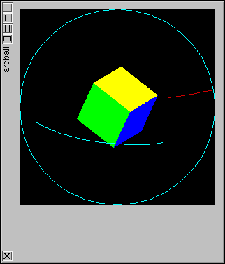

Fl_Gl_Window | +----Fl_Gl_Arcball_Window
#include <Flek/Fl_Gl_Arcball_Window.H>
Fl_Gl_Arcball_Window is a subclass of Fl_Gl_Window that provides an arcball 3d rotation controller. What is arcball? From the comp.graphics.algorithms FAQ:Arcball is a general purpose 3-D rotation controller described by Ken Shoemake in the Graphics Interface '92 Proceedings. It features good behavior, easy implementation, cheap execution, and optional axis constraints. A Macintosh demo and electronic version of the original paper (Microsoft Word format) may be obtained from ftp::/ftp.cis.upenn.edu/pub/graphics.See the arcball demo in the test directory.

|
|
The constructor for an empty Fl_Gl_Arcball_Window.
Draws the arcball controls.
Multiplies the current matrix with the arcball matrix..
Sets or gets the arcball origin..
Sets or gets the arcball radius..